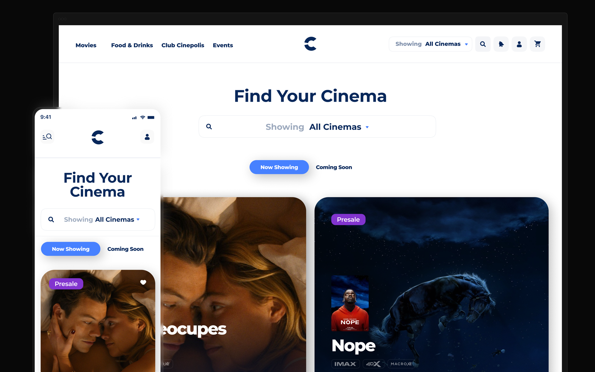
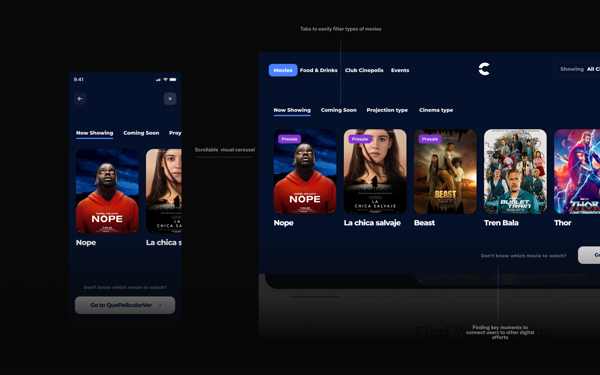
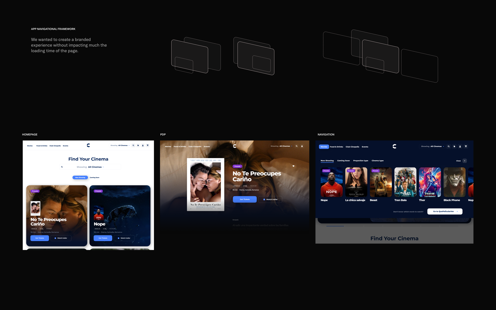
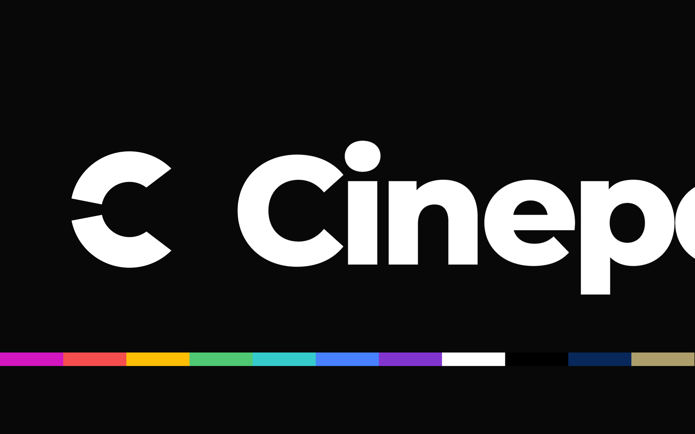
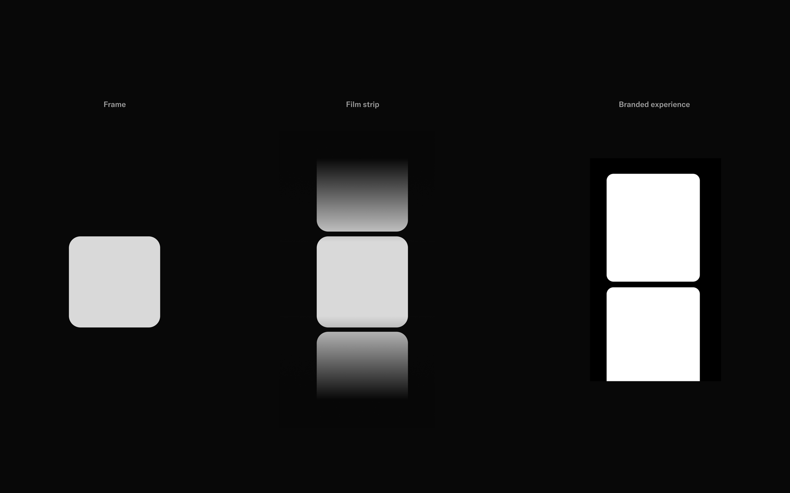
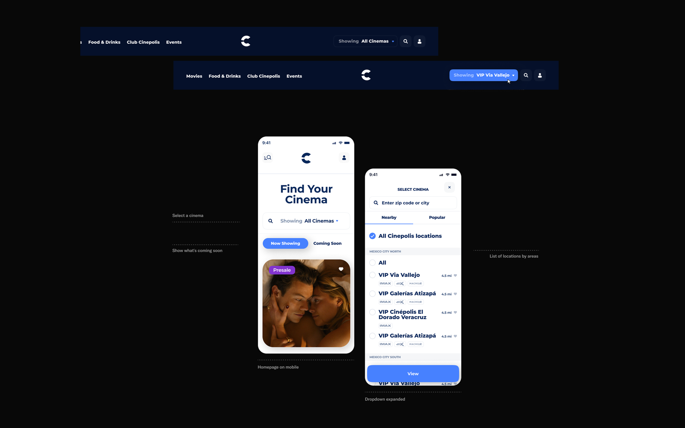
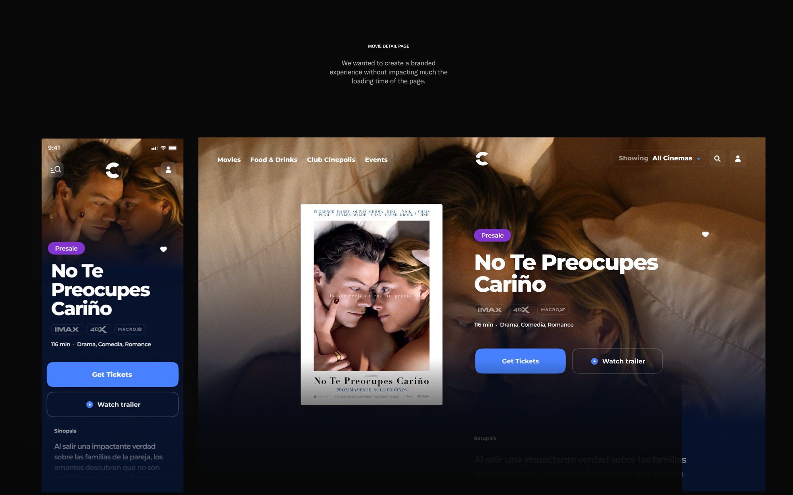
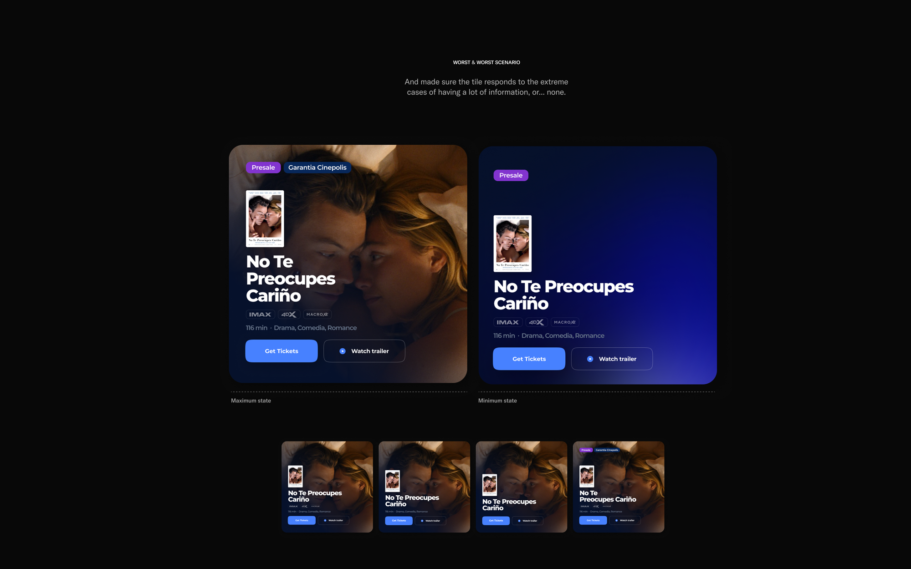
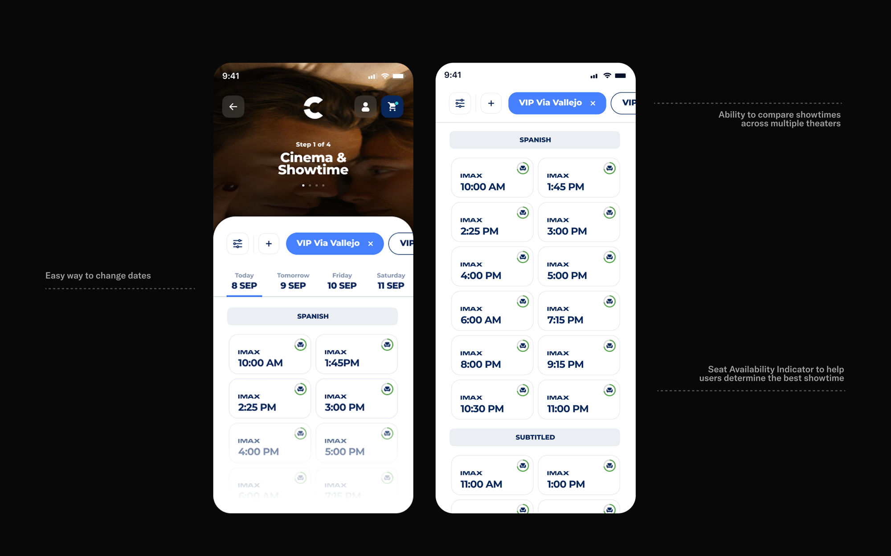

Fantasy — 2023 · Digital Ecosystem
A redesign of Cinépolis's website, mobile app, and in-cinema kiosks — for one of the largest movie-theatre chains in the world. Led at Fantasy, in Spanish and English, all the way up to presenting to the CEO.

01 — Background
Cinépolis is a Mexican and international movie-theatre chain — the biggest in Mexico (427 theatres across 97 cities), the largest in Latin America, and one of the largest anywhere, with cinemas in Spain, India, Indonesia, Oman, Bahrain, Saudi Arabia, the UAE, and the US.
Fantasy partnered with them to redesign their website, mobile app, and in-cinema kiosks. And it's really two businesses in one — movies and food — so the experience has to sell both.

02 — Challenges
The parameters were unusually tight. A brand we couldn't touch, real technology limits, and a marketing team that owned the existing UI. Ads were non-negotiable — they're the main revenue on the site. And we were reminded, roughly ten times, that “this is a UX project.” We could build prototypes the client found genuinely interesting, but not ones they had the ability to implement.

The brief, in their words

03 — Process
I led the design in both Spanish and English. We were lucky enough to travel to Mexico for collaboration sessions with the client and to present directly to the company's CEO.
There were no neat rounds — it was one continuous iteration. The hardest part wasn't the work; it was the pace of decisions on the client side, which were slow to land. [ Flag: softened from your note about the client being “indecisive” — confirm how candid you want to be about a named client. ]

04 — Work
The visual approach came from the most minimal expression of film itself — the frame. As little design as possible, built on the brand's existing typeface, Montserrat (Bold & Extrabold). Every screen had to feel branded while loading fast and staying legible.
Branded ads. Ads are Cinépolis's main revenue on the web, so instead of fighting them we built a modular ad system that followed the site's visual style — plus dynamic heroes to feature big partnerships.

04 — Work
The purchase flow. Select a cinema — where download time and theatre-info sync were critical, so the design stayed as simple as possible — then showtime, seat & ticket selection, cart, and checkout. The cart alone had four layouts, from a desktop side-panel to mobile.
Promotions. We used purple across all promotional messaging so it read as its own layer.
Food & drinks. Food is a bigger business than the movies — every “restaurant” has a different owner and its own inventory — so it needed its own visual style within the same system.

05 — Conclusions
The start was rough because there were no empowered decision-makers in the room — nothing got decided, and the project drifted. My biggest takeaway: learn to make decisions and stick to them. Overly polite teams stall; someone has to be willing to choose. As designers we can show character and decisiveness because we know what we're doing — while staying honest that we'll make mistakes.
My clearest craft failure was language: we called it a “design system” when it was really a re-design, without giving the team the time to actually build one. The label set an expectation we couldn't meet. [ Flag: your notes also mentioned the client team's seniority — I left that out; add it back if you want. ]

If I started over, I'd push for decisions earlier, name the project honestly, and protect the time to do each part properly. The constraints were never really the problem — the indecision was. And presenting in person, in Mexico, to the CEO taught me as much about reading a room as about design.
